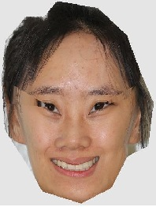
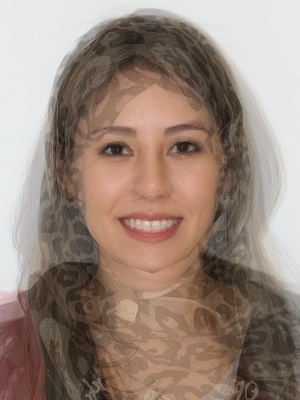
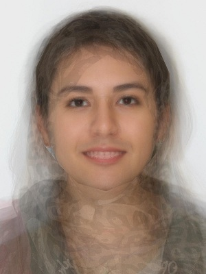
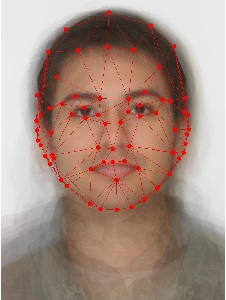
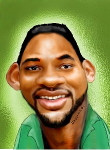
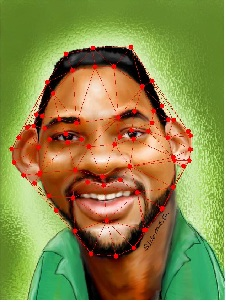
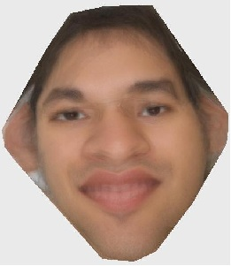

Mean Face
After generating the mean face, several interesting operations can be done, such as using mean face to produce caricatures, masculitizing and feminizing transforms and indicating specific transforms.
Results
1. Caricatures (Outward or Inward Mean Face)
- Compute the deviation of a given person from the average face, which is the same as the difference between an individual face and the average. This vector is the essence of that person, and we can scale that vector outward or inward to make a person more or less like themselves.
Original |
-0.2*Difference |
-0.4*Difference |
-0.6*Difference |
-0.8*Difference |
-1.0*Difference(average) |
|
Inward Average |
||||||
Original |
+0.2*Difference |
+0.4*Difference |
+0.6*Difference |
+0.8*Difference |
+1.0*Difference |
|
Outward Average |
 |
* Notice: There is a limit to how far the caricature vector can be pushed though, as the triangle mesh will begin to break down at a certain point.
2. Masculitizing and Feminizing Transforms
- Since the unequal number of males and females in our class (# of males = 14, # of females = 3). I gave the different weights for the correspondence points of males and females in order to get the new average shape based on the qualized male and female points, which means that the control points for males and females play the same important roles.
| Averaged Male Face | Averaged Female Face | Average Male and Female Face | Chaning From Male to Female Face |
|  |  |
3. Another Type of Caricatures
- After getting the mean face, I tried another type of operation that I provided the mean face with specific shape and using the algorithm I can get the new face corresponding to the given geometry.
Image A |
Image A with Triangle |
ImageB |
Image B with Triangle |
Output Image |
|  |  |  |  |
- I tried the following two caricatures pictures
| Image A | Image B | Output Image |
| Image A | Image B | Output Image |